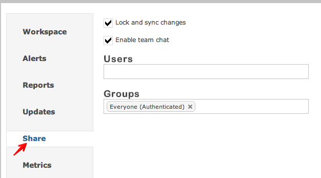
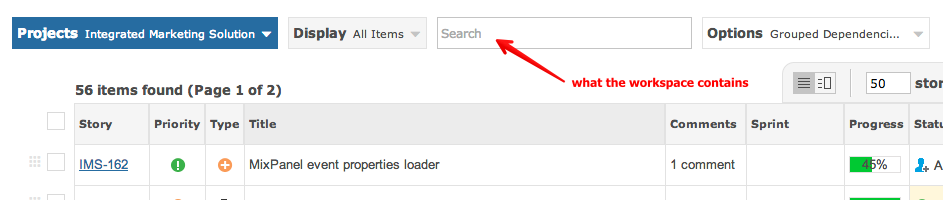
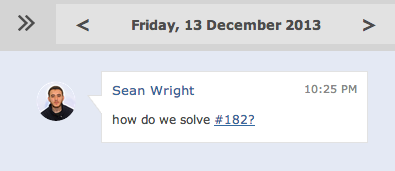

Workspaces can be shared with co-workers.

Every workspace is defined by the filter at the top of the view.

If a workspace is "locked and sync'ed" then co-workers that you share this workspace with, cannot permanently change the filter criteria you have set. This ensures everyone sees what you want them to see.

Instant messaging chat is available to everyone who is part of the workspace.
Select which user groups you want to share with. You can only share with groups or users that are in your Interaction Groups.
The following is an overview of sharing workspaces within Gemini.